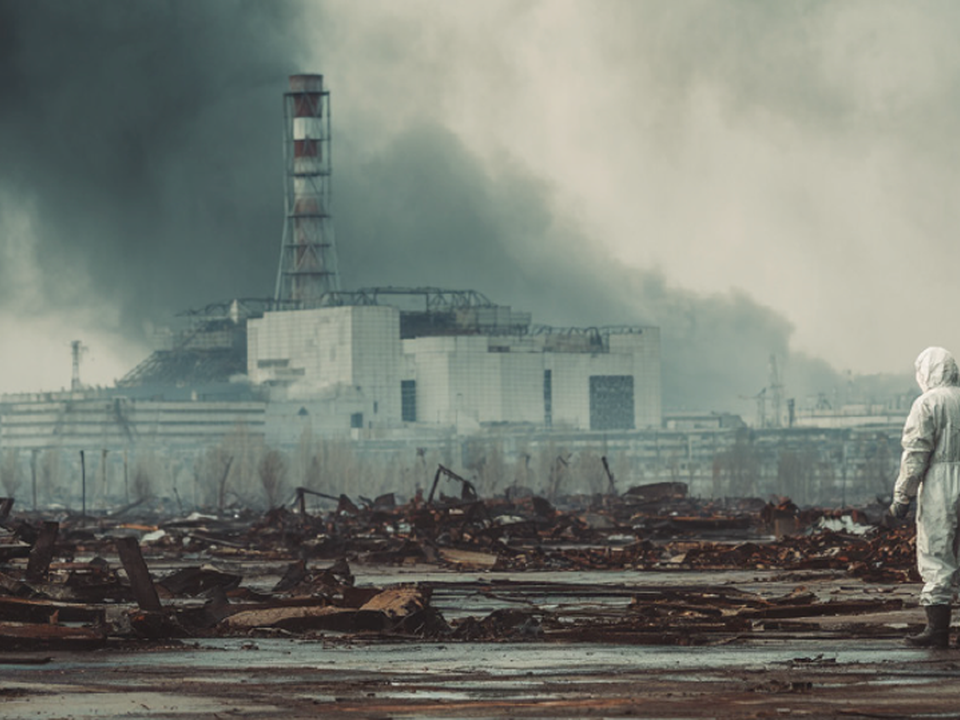
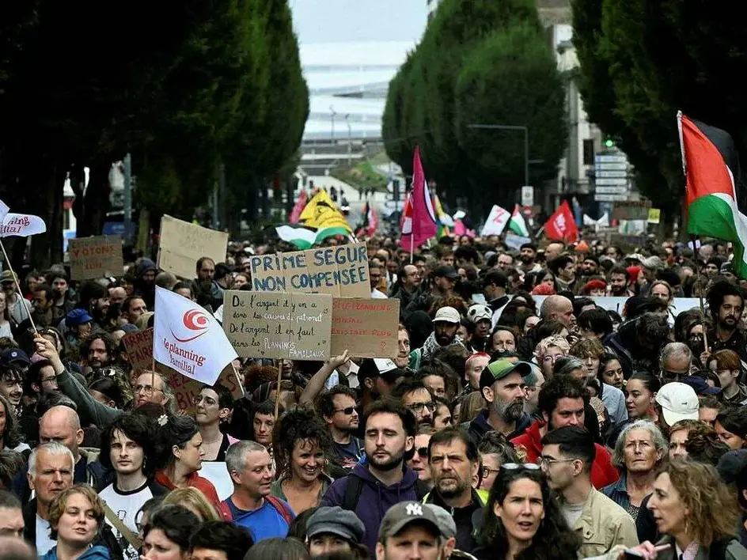

Les derniers articles publiés

Face à face avec les leçons politiques de Game of Thrones
ATTENTION SPOILER !!! Game of Thrones, c’est le mariage entre l’univers minimaliste de George R. R. Martin, des réalisateurs visionnaires, un casting 5 étoiles et une bande originale unique qui résonne encore dans nos mémoires. Alors que la série fête ses débuts il y a 15 ans, regardons les aspects politiques à tirer du scénario ultraréaliste d’une des meilleures séries de l’histoire de la télévision.

Tchernobyl : 40 ans après
Le 26 avril 1986 à 1h23 du matin, l’humanité connait le pire accident nucléaire de son histoire. En une nuit, le réacteur 4 de la centrale nucléaire de Tchernobyl devient connu dans le monde entier. 40 ans après, récit d’une nuit qui a redéfini le nucléaire civil à travers le monde.

Le fléau du terrorisme : l’état d’urgence face à l’insécurité
Le 13 novembre 2015, Paris, la France et le monde se retrouvent plongés dans un climat de terreur. Les attentats terroristes du 13 novembre marquent un point de bascule dans les mesures prises par l’Etat français pour lutter contre le terrorisme, devenu la principale menace intérieure pour les individus.

Drapeau palestinien dans les manifestations : pourquoi ça dérange ?
Ce dimanche 12 octobre, place de la République à Paris, le drapeau palestinien a été enlevé et remplacé par le drapeau français sous les applaudissements d’un rassemblement patriotique français. Pour certains, il s’agit d’une manière de réaffirmer l’identité française en tant que priorité, pour d’autres, cela représente seulement un irrespect pour les peuples opprimés.